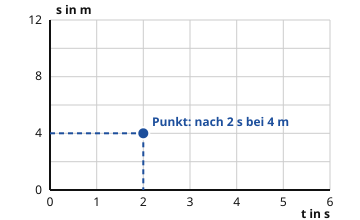

Das Weg-Zeit-Diagramm lesen
Mit einem KI-Tutor lernen
Ein KI-Tutor erklärt dir diese Seite und hilft dir bei den Übungen. Wähl deinen Assistenten:
Mit Claude öffnen Mit ChatGPT öffnen Mit Mistral Vibe öffnen
Du nutzt dein eigenes Konto beim Anbieter. Der Assistent ist kein Angebot von lernapps.net: lernapps liefert nur Inhalte und Übungen. Die Wahl gilt für alle Seiten, nur auf diesem Gerät.
Vom Wagen zum Punkt
Du kennst die Geschwindigkeit als Weg pro Zeit: . Ein Wagen, der in 1 s genau 2 m weit kommt, fährt mit 2 m/s. Die Geschwindigkeit nennen wir im Alltag auch das Tempo. Ein Diagramm zeigt dir das Tempo und den Weg als Bild. Du siehst auf einen Blick, wo der Wagen zu welcher Zeit ist.
- Weg-Zeit-Diagramm
Ein Weg-Zeit-Diagramm zeigt, wie weit ein Körper vom Start entfernt ist. Die Zeit steht waagerecht, der Weg senkrecht.

Schau auf den Punkt und auf die gestrichelten Linien. Sie führen zu den Zahlen auf den Achsen.
Quelle: eigene Zeichnung. Lizenz: CC-BY-4.0.Waagerecht, nach rechts, steht die Zeit in Sekunden. Senkrecht, nach oben, steht der Weg in Metern. Das ist der Abstand des Wagens vom Start.
Ein Punkt gehört zu einem Zeitpunkt. Der blaue Punkt sagt: Nach 2 s ist der Wagen 4 m vom Start entfernt. So liest du einen Punkt: Geh von der Zeit nach oben bis zum Punkt. Dann geh nach links und lies den Weg ab.
Das Diagramm ist kein Foto der Bahn. Die Linie ist nicht die Bahn. Sie zeigt: Wie weit ist der Wagen vom Start weg?
Was die Linie dir sagt
Fährt der Wagen immer gleich schnell, liegen alle Punkte auf einer geraden Linie. Bei 2 m/s kommen in jeder Sekunde 2 m dazu.
| Zeit t in s | Weg s in m |
|---|---|
| 0 | 0 |
| 1 | 2 |
| 2 | 4 |
| 3 | 6 |
| 4 | 8 |
Eine Linie ist steil, wenn sie schnell nach oben geht. Sie ist flach, wenn sie nur langsam nach oben geht. Daran erkennst du das Tempo:
- Steile Linie: In kurzer Zeit kommt viel Weg dazu. Der Wagen ist schnell.
- Flache Linie: In derselben Zeit kommt wenig Weg dazu. Der Wagen ist langsam.
- Waagerechte Linie: Der Weg ändert sich nicht. Der Wagen steht.
Ein Beispiel
Wagen X kommt in 3 s genau 6 m weit, Wagen Y in 3 s genau 3 m. In 3 s kommt X also doppelt so weit. Seine Linie steigt doppelt so steil: X fährt mit 2 m/s, Y mit 1 m/s.
Ausprobieren
Oben siehst du einen Wagen auf der Bahn. Die Punkte zeigen, wo er nach 0, 1, 2 bis 6 Sekunden ist. Das Quadrat ist der Start. Darunter ist das Weg-Zeit-Diagramm dazu. Seine Achsen bleiben immer gleich, damit du Linien vergleichen kannst. Der Weg geht bis 24 m, so lang ist die Bahn.
Mit + und − stellst du das Tempo des Wagens ein, von 0 bis 4 m/s. Am Anfang sind es 2 m/s. Der Wagen fährt dann die ganzen 6 s mit diesem Tempo. Mit Zurücksetzen kommst du wieder zu 2 m/s. Probiere 0, 1, 2 und 4 m/s. Schau auf die Linie: Wie steil ist sie? Wo ist sie nach 6 s? Bei 0 m/s liegen alle Punkte auf der Bahn übereinander, denn der Wagen bleibt stehen. Die Tabelle unter dem Diagramm zeigt dir die genauen Werte.
Wagen mit gleichem Tempo: Der Wagen fährt los und behält sein Tempo.
Der Wagen auf der Bahn
Weg-Zeit-Diagramm
Tempo einstellen
Werte als Tabelle
| Zeit t in s | Tempo v in m/s | Weg s in m |
|---|---|---|
| 0 | 2 | 0 |
| 1 | 2 | 2 |
| 2 | 2 | 4 |
| 3 | 2 | 6 |
| 4 | 2 | 8 |
| 5 | 2 | 10 |
| 6 | 2 | 12 |
Ein Wagen fährt 6 Sekunden lang mit gleichem Tempo. Du kannst das Tempo zwischen 0 und 4 m/s einstellen und siehst dazu die Bahn mit dem Wagen und das Weg-Zeit-Diagramm.
Beispiel mit 2 m/s:
- nach 0 s: Weg 0 m
- nach 1 s: Weg 2 m
- nach 2 s: Weg 4 m
- nach 3 s: Weg 6 m
- nach 4 s: Weg 8 m
- nach 5 s: Weg 10 m
- nach 6 s: Weg 12 m
Die Punkte liegen auf einer geraden Linie. Bei 4 m/s ist die Linie doppelt so steil, bei 0 m/s ist sie waagerecht.
Übung
Übung
Lösung
Wagen A
Wagen A kommt in 6 s genau 6 m weit. Das sind 1 m/s. Ein anderer Wagen kommt in derselben Zeit weiter.
Wagen B richtige Antwort
Wagen B kommt in 6 s genau 12 m weit, das sind 2 m/s. Seine Linie ist am steilsten.
Wagen C
Wagen C kommt in 6 s nur 3 m weit. Seine Linie ist am flachsten, er ist der langsamste.
Je steiler die Linie im Weg-Zeit-Diagramm, desto mehr Weg kommt in derselben Zeit dazu. Das heißt, der Wagen ist schneller.
Mehr dazu:
Übung
Lösung
Richtige Antwort: Die Aussage stimmt nicht.
Bei einer waagerechten Linie ändert sich der Weg nicht, obwohl die Zeit vergeht. Der Wagen steht.
Mehr dazu:
Übung
Lösung
Richtige Antwort: 6 m
Bei 2 s liegt die Linie auf der Höhe von 6 m. Der Wagen ist dann 6 m vom Start entfernt.
Mehr dazu:
Knobeln: Für alle, die mehr wollen.
Übung
Lösung
Richtige Antwort: 3 m/s
Der Wagen kommt in 4 s genau 12 m weit. Mit ergibt das .
Mehr dazu: